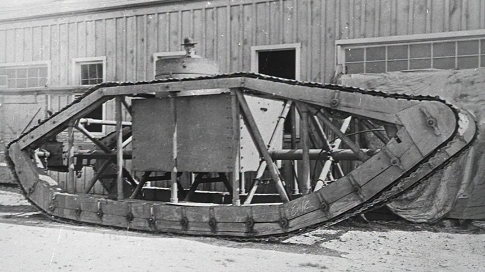

What makes a tank experimental?
During the First World War, military engineers explored a variety of armoured vehicle designs, many of which never reached the battlefield. Some were built and tested but ultimately abandoned, while others underwent substantial modifications before entering service. The distinction between an experimental tank, an unsuccessful prototype, and an unrealised concept is not always clear.
Explore Experimental Tanks!
Discover the unusual designs, ambitious engineering projects, and forgotten prototypes of the First World War!
Explore the Tanks
Tsar Tank
The Tsar Tank was an experimental Russian wheeled combat vehicle designed by Nikolai Lebedenko in 1914–1915. It had no tracks, so it was not a tank in the strict sense. One prototype was built and tested in August 1915 (Old Style). The High Commission gave a negative verdict and the project was closed in September 1915. The prototype stayed at the test site near Dmitrov, about 60 km from Moscow, and was scrapped in 1923.
The vehicle was a tricycle. Two spoked front wheels, each about 9 m in diameter, carried the hull, and a rear steering wheel was only about 1.5 m high. Lebedenko relied on wheel size rather than tracks to cross ditches and rough ground; by his own account, the idea came from Central Asian araba carts. Two 240 hp Maybach engines drove the front wheels.

The parts were made at a factory in Moscow's Khamovniki district and assembled in spring and summer 1915 at Orudyevo station near Dmitrov. Mobility trials began on 27 August 1915 (Old Style). The vehicle moved and crushed trees with its front wheels, but its small rear wheel sank into soft ground almost at once, and the engines could not pull the machine out. The finished vehicle weighed about 60 tonnes against a design weight of 40 tonnes, and its weight was unevenly distributed. The commission also found it underpowered and highly vulnerable to artillery fire, especially the wheels and spokes. The prototype was guarded at the site until 1917, then abandoned, and dismantled for scrap in 1923.
Development
Lebedenko worked in a private laboratory in Moscow that took military orders. Nikolai Zhukovsky calculated the wheels. Boris Stechkin and Alexander Mikulin, Zhukovsky's nephews, took part as young engineers; both later became known as engine designers.
In January 1915 Lebedenko presented Nicholas II with a wooden clockwork model driven by a gramophone spring. The emperor allocated 210,000 rubles from his personal funds for a full-size vehicle. He kept the model, and its later fate is unknown.
Skeleton Tank
The Skeleton Tank was an experimental American tank built in 1918 by the Pioneer Tractor Company of Winona, Minnesota. It was meant to cross wide trenches like the British heavy tanks at a fraction of their weight: about 9 tons, against 28–29 tons for the British Mark IV and Mark V. The vehicle was an open frame with two long track frames, with a small armoured compartment suspended between them. The compartment held the two-man crew and two 50 hp engines, and the only armament was a single 0.30 in (7.62 mm) machine gun in a turret. The prototype was ready for trials in October 1918, a month before the Armistice. Only one was built and it was never ordered into production. It survives and is on display at Fort Lee, Virginia.

K-Wagen
The K-Wagen (Großkampfwagen) was a German super-heavy tank intended for breakthrough operations. The War Ministry approved the design on 28 June 1917 and ordered ten vehicles: five from the Riebe factory in Berlin and five from Wegmann in Kassel. The planned weight was 120 tonnes, reduced from an initial 165 tonnes by shortening the hull. The crew was to number 27, and the armament was four 77 mm guns and seven 7.92 mm machine guns. The vehicle was too large to move assembled, so it was designed to be split into sections for rail transport and reassembled near the front. By the Armistice in November 1918, only two vehicles were under construction at the Riebe factory, both nearly finished but not completed. The Allied Control Commission had them scrapped.

Holt Gas-Electric Tank
The Holt Gas-Electric Tank was the first tank prototype built in the United States. It was developed in 1917–1918 by the Holt Manufacturing Company in collaboration with General Electric. A 90 hp four-cylinder petrol engine drove a generator, which powered one electric motor per track. The French Saint-Chamond used a comparable petrol-electric transmission, so the system itself was not unique. The tank weighed about 25 tonnes and carried a 75 mm gun. A complex water-cooling system was added to prevent the transmission from overheating, and it increased the weight further. In trials the tank reached 10 km/h on level ground but struggled to climb even mild slopes. Only one was built, and the project was abandoned after the trials.